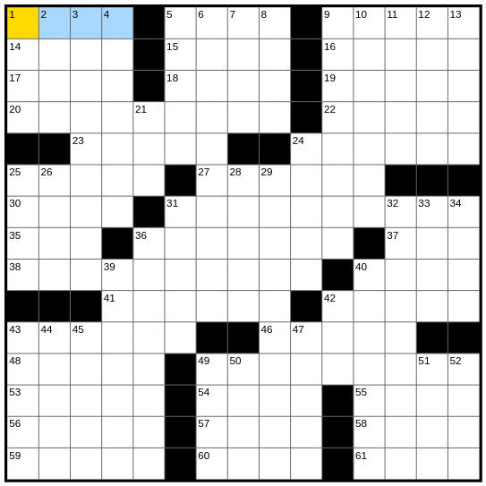
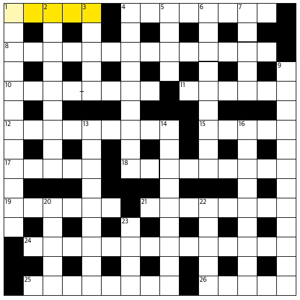

A style of crossword most popular in the UK, little-known in the US.
Every quality UK newspaper (e.g. The Times, The Guardian, The Independent)
publishes one every day.
They are followed by a non-vocal fandom…
The grids are quite different.
 
"Normal" (so-called "quick") crossword clues are often
straightforward synonymous definitions.
US State, Capital Boise (5)
Cryptic clues are… more twisted.
But there are rules! And conventions!
Every* clue points to the answer in two ways:
Somewhere in the clue (usually at one end or the other) is the definition.
The rest of the clue is the wordplay. When decoded, it will give the same answer.
Clues are designed to throw you off the scent: you must ignore the surface
meaning, punctuation, etc, and consider carefully each word.
In a good clue, no word is superfluous.
Clues may not mean what they (appear to) say, but they must say what they mean!
One of the easiest types of clue is the anagram.
Spin doctor live, on tour (10)
Many many words can be anagram indicators: anything that suggests letters being potentially changed, upset, moved, made anew, etc.
REVOLUTION
("doctor" LIVE ON TOUR)
Another "easy" one.
Sometimes (usually not more than once per puzzle) the answer is hidden directly inside the clue, either forwards or backwards. This is indicated by a suitable word like "some".
You would think this would make it easy.
Maybe wearing some larger undies (6)
GERUND
("wearing" is one example – "maybe" – of a gerund)
Sometimes* the answer is clued in a playful way.
Fallout when the deal is subjected to cuts? (7)
*Almost always. Straight definitions are rare and
would be considered poor in a cryptic clue.
SAWDUST
(deal² noun a plank or planks of soft wood)
A two word clue is very often a double definition.
Both words, interpreted in the right way, mean the same thing - the answer.
Potty train (4)
DDs can be more than two words, of course.
LOCO
(potty¹ adj colloq mad; crazy)
A very common type of clue has the answer made up from parts put together. The parts might be obtained using other tricks in the setter's arsenal.
Former lover can court no more (7)
EXTINCT
("former lover" = EX, "can" = TIN, "court" = CT)
Cut disease with unlimited money (1-4)
T-BONE
You would be surprised how many meanings are given (in the dictionary)
to each single letter.
But: you cannot just abbreviate any word to its initial letter;
it must be in the dictionary (often Chambers).
e.g. The letter R is fairly clued by any of:
right, river, King (Rex), Queen (Regina), resistance, run.
Or even: take (recipe)!
But not e.g. rabbit.
The "holy grail" clue where the whole clue is both the definition and the wordplay. Quite rare.
A position with game in front of it (6)
GOALIE
("A position" = A LIE, "game" = GO)
Sometimes a clue can be so good, it makes your whole week.
Such sickness and suffering originate with medic, ultimately (10)
IATROGENIC
(Anagram [suffering] of ORIGINATE with last letter [ultimately] of mediC)
Each crossword is the work of one person (the setter).
Different setters have different styles.
A setter's job is to put up a good fight, and lose bravely.
RIP Nutmeg, one of the best for smooth surfaces and fair clueing.
| You see... | You think... |
|---|---|
| "banker" or "flower" | river |
| "issue" | children |
| "sweetheart" | E |
| "unknown" | X, Y, Z |
| "corporation" | tum |
| "Nice day" | jour |
| "leg" | on |
| "posh" | U |
You get reasonably good at them after some years (decades?) of daily practice.
Among many other things, you should have some knowledge of: Greek/Roman/Norse myths; classic (and classical) literature; Shakespeare; current events; pre-decimal British currency; military abbreviations; sporting and gaming terms, especially cricket, golf, chess, and bridge; musical terms; high school French; Latin phrases; the NATO alphabet; Roman numerals; Greek letters; the Periodic Table; countries; cities; rivers; currencies; Cockney rhyming slang; and short synonyms and examples of anything and everything.
Can ChatGPT solve cryptic crossword clues?
Of course, the answer is: no.
Ironically, cryptics are quite doable by specialized programs…
"I'm going to give you cryptic crossword clues and I'd like you to solve them and explain the solution.
"Sure! I'd be happy to help you solve cryptic crossword clues.
To solve a cryptic crossword clue, [blah blah blah explanation we don't need].
To start, could you give me one of the clues that you would like me to solve?
"Owl pursuing pussycat that's possibly ours, grabbing it (6)"
"In this clue, the word "owl" is a hint
that the answer is a type of bird. [wrong]
The word "pursuing" suggests that the answer is something that is following or chasing something else, which could be the word "pussycat." [uhhh...]
The word "that's possibly ours" could be a hint that the answer is a word that sounds like "ours." [wrong]
Taking all of these clues into consideration, it seems likely that the answer to this clue is the word "spoon." [wrong]
"Spoon" is a type of bird that is known for its ability to follow and chase insects, and it also sounds like the word "pursue." [???]
"Grabbing" the word "pussycat" could be a hint that the answer is a type of spoon, such as a dessert spoon or a tablespoon. The answer to this clue is therefore "SPOON."
"That's not right. The answer is SUITOR. Can you explain why?
"I apologize for the mistake in my previous response. You are correct that the answer to this clue is SUITOR.
[blah blah blah]
When we put these two clues together, we get the word "SUITOR," which fits the definition of the answer and also sounds like "pussycat" and "ours."
Therefore, the answer to this clue is SUITOR.
There are some things LLMs will (should) never do.
Cryptic crosswords are in that category.
Prince left island country to pursue posh college dream (13)
what LLMs are designed to deal with)
What would be the point of using a computer?
Try this CppCon cryptic crossword!